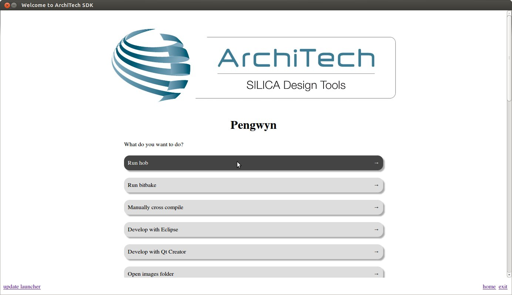
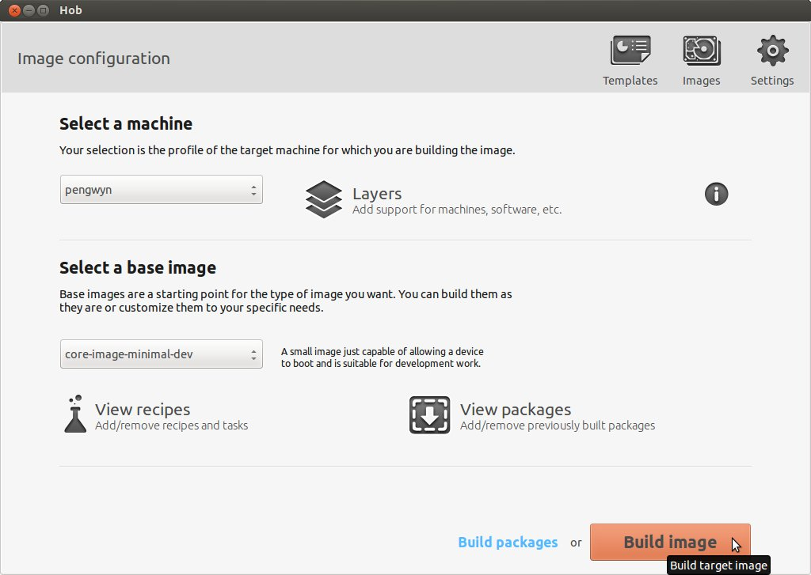
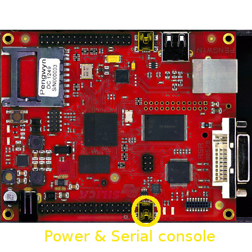

Table Of Contents
- Installing the Virtual Machine
- How to use Poky
- How to customize u-boot
- How to customize the Linux Kernel
- How to create the SD card
- How to write the NAND memory
- How to use HOB
- How to configure Minicom
- How to write a software application for the Pengwyn board
- Qt SDK
- Hardware
- Opkg Basics
- How to add 3”5 display with touch screen
Quick start guide¶
This document will guide you from importing the virtual machine to the debugging of an Hello World! example on a customized Linux distribution that you will generate with the Yocto toolchain.
Installing the Virtual Machine¶
The development environment is provided as a virtual disk (to be used by a VirtualBox virtual machine) which you can download from this page:
Important
Compute the MD5SUM value of the zip file you downloaded and compare it to the golden one you find in the download page.
Uncompress the file, and you will get a .vdi file that is our virtual disk image. The environment contains the SDK for all the boards provided by Architech, Pengwyn included.
Download VirtualBox¶
For being able to use it, you first need to install VirtualBox (version 4.2.10 or higher). You can get VirtualBox installer from here:
https://www.virtualbox.org/wiki/Downloads
Download the version that suits your host operating system. You need to download and install the Extension Pack as well.
Important
Make sure that the extension pack has the same version of VirtualBox.
Install the software with all the default options.
Create a new Virtual Machine¶
- Run VirtualBox
- Click on New button

- Select the name of the virtual machine and the operating system type

- Select the amount of memory you want to give to your new virtual machine

- Make the virtual machine use Architech’s virtual disk by pointing to the downloaded file. Than click on Create.

Setup the network¶
We need to setup a port forwarding rule to let you (later) use the virtual machine as a local repository of packages.
Note
The virtual machine must be off
- Select Architech’s virtual machine from the list of virtual machines

- Click on Settings

- Select Network
- Expand Advanced of Adapter 1

- Click on Port Forwarding
- Add a new rule
- Configure the rule

- Click on Ok
Customize the number of processors¶
Building an entire system from the ground up is a business that can take up to several hours. To improve the performances of the overall build process, you can, if your computer has enough resources, assign more than one processor to the virtual machine.
Note
The virtual machine must be off
- Select Architech’s virtual machine from the list of virtual machines
- Click on Settings
- Select System
- Select Processor
- Assign the number of processors you wish to assign to the virtual machine

If you changed the number of processors, you might want to consider reading the guides on how to speedup the build process for Poky and HOB.
Create a shared folder¶
A shared folder is way for host and guest operating systems to exchange files by means of the file system. You need to choose a directory on your host operating system to share with the guest operating system.
Note
The virtual machine must be off
- Select Architech’s virtual machine from the list of virtual machines
- Click on Settings
- Select Shared Folders
- Add a new shared folder
- Choose a directory to share on your host machine. Make sure Auto-mount is selected.

Once the virtual machine has been booted, the shared folder will be mounted under /media/ directory inside the virtual machine.
The welcome screen¶
The splash screen application has been designed to facilitate the access to the boards tools. It can be opened by clicking on its Desktop icon.
Once started, you can can choose if you want to work with Architech’s boards or with partners’ ones. For Pengwyn, choose ArchiTech.
A list of all available Architech’s boards will open, select Pengwyn.

A list of actions related to Pengwyn that can be activated will appear.
Let’s build the system¶
First of all you need to build a system, in this section you will build a predefined Linux image.
By clicking Run hob you will launch HOB.
Important
To run HOB you need a working Internet connection. If internet connection doesn’t work you have to follow this instructions:
- Click with the right button of the mouse on the ethernet icon on the top right of the screen
- Select Edit Connections...
- In the wired tab select “wired connection” and press Edit button
- With another PC go to this web page: http://www.opendns.com/opendns-ip-addresses and copy the two IPs
- Go in the IPv4 Settings tab and write in DNS Servers text box the two IPs that you have copied
If required the sudo password is pengwyn
Select pengwyn as current machine from the drop-down menu.
Select core-image-minimal-dev as base image.
Click on Build image button.
Important
The build process can last hours.
Wait until it finishes.

At the end of the build the images will be automatically saved in /home/pengwyn/yocto/build/tmp/deploy/images folder.
Create your SD card¶
Important
You must have an SD card reader/programmer to build the SD card. The SD card must be at the least 1GB size. VirtualBox will see only USB connected SD card reader/programmer. This guide will assume you have a USB device for such a purpose.
To create your SD card, please follow these steps:
- Connect your SD card reader to your computer than to the virtual machine, from VirtualBox menu select Devices → USB Devices → “your SDcard reader”.
- Insert the SD card into the adapter (in this example we are inserting an SD card already partitioned with a FAT and an EXT2 partition, that is the basic configuration for the Pengwyn board).
- Download the tool scripts (download link pengwyn-tools.tar.bz2) and decompress in a folder. eg:
tar -jxf pengwyn-tools.tar.bz2 -C /home/architech/Desktop- Run the following command
~$ sudo fdisk -l
Disk /dev/sdb: 1971 MB, 1971322880 bytes
255 heads, 63 sectors/track, 239 cylinders
Units = cylinders of 16065 * 512 = 8225280 bytes
Sector size (logical/physical): 512 bytes / 512 bytes
I/O size (minimum/optimal): 512 bytes / 512 bytes
Disk identifier: 0x9bfa2153
Device Boot Start End Blocks Id System
/dev/sdb1 * 1 9 72261 c W95 FAT32 (LBA)
/dev/sdb2 11 239 1839442+ 83 Linux- Find the device name from fdisk command output, in this example is /dev/sdb.
- Run the script that will prepare the SD card with all the needed files (sudo password: architech)
cd /home/architech/Desktop/pengwyn-tools
sudo ./fast-create-sdcard.sh+------------------------------------------------------------------------------+
| |
| This script will create a bootable SD card. |
| The script must be run with root permissions. |
| |
+------------------------------------------------------------------------------+
+------------------------------------------------------------------------------+
| LIST OF AVAILABLE DRIVES: |
+------------------------------------------------------------------------------+
# major minor size name
1: 8 16 1927168 sdb
Enter Device Number #:+------------------------------------------------------------------------------+
| |
| This script will create a bootable SD card. |
| The script must be run with root permissions. |
| |
+------------------------------------------------------------------------------+
+------------------------------------------------------------------------------+
| LIST OF AVAILABLE DRIVES: |
+------------------------------------------------------------------------------+
# major minor size name
1: 8 16 1927168 sdb
Enter Device Number #: 1
sdb was selected
sdb1 sdb2
72261 1839442
Mount the partitions
Emptying partitions
Syncing....
+------------------------------------------------------------------------------+
| Copying files now... will take minutes |
+------------------------------------------------------------------------------+
Copying boot partition
Copying file system partition
Copying modules
Syncing....
Un-mount the partitions
Remove created temp directories
Operation Finished
Press ENTER to finish- Remove the SDcard
Run your first Application on Pengwyn board!¶
Launch Eclipse using Architech Splashscreen just click on Develop with Eclipse.

To create a project based on a Yocto template and then display the source code, follow these steps:
- Select File→New→Project...
- Under C/C++, double click on C Project to create the project.
- Expand Yocto ADT Project.
- Select Hello World ANSI C Autotools Project. This is an Autotools-based project based on a Yocto Project template.

- Put a name in the Project name: field. Do not use hyphens as part of the name.
- Click Next.
- Add information in the Author and Copyright notice fields.
- Be sure the License field is correct.
- Click Finish.
Note: If the “open perspective” prompt appears, click Yes so that you enter in the C/C++ perspective. The left-hand navigation pane shows your project. You can display your source by double clicking the project’s source file.

Building the Project¶
To build the project, select Project→Build Project. The console should update with messages from the cross-compiler. To add more libraries to compile:
- Click on Project→Properties.
- Expand the box next to Autotools.
- Select Configure Settings.
- In CFLAGS field, you can add the path of includes with -Ipath_include
- In LDFLAGS field, you can specify the libraries you use with -lname_library and you can also specify the path where to look for libraries with -Lpath_library
Note: All libraries are located in ~/architech_sdk/architech/pengwyn/sysroot subdirectories.

Deploying and Debugging the Application¶
Connect the Pengwyn board to the PC by means of a usb cable to power the board and to have the serial console
Once you built the project and the board is running the image, use minicom (refer to section Usb-Serial to know how to configure minicom) to run tcf-agent program in target board:
Yocto (Built by Poky 7.0.1) 1.2.1
ttyO0
pengwyn login: root
root@pengwyn:~# ifconfig eth0 192.168.0.10Test the ethernet:
ping 192.168.0.100If the output is similar to this one:
64 bytes from 192.168.0.100: icmp_req=1 ttl=64 time=0.946 ms
64 bytes from 192.168.0.100: icmp_req=2 ttl=64 time=0.763 ms
64 bytes from 192.168.0.100: icmp_req=3 ttl=64 time=0.671 ms
64 bytes from 192.168.0.100: icmp_req=4 ttl=64 time=0.793 msthe ethernet connection is ok, then run command:
/etc/init.d/tcf-agent restartOn the Host machine, follow these steps to let Eclipse deploy and debug your application:
- Select Remote System Explorer perspective.

- In Remote System area right-click TCF icon and select Property.
- In Host tab, insert in Host Name and Connection Name fields the IP address of the target board. (e.g. 192.168.0.10)
- Then press OK.
- Select Run→Debug Configurations...
- In the left area, expand C/C++Remote Application.
- Locate your project and select it to bring up a new tabbed view in the Debug Configurations Dialog.

- Use the drop-down menu now in the Connection field and pick the IP Address you entered earlier.
- Enter the absolute path on the target into which you want to deploy the application. Use the Browse button near Remote Absolute File Path for C/C++Application: field. No password is needed.

- Enter also in the path the name of the application you want to build. (e.g. Hello)
Important
If debug does not works, check if tcf-agent is running on the board and gdbserver is present.

With F6 key you can execute the application step by step. You can see the target output in the eclipse console view